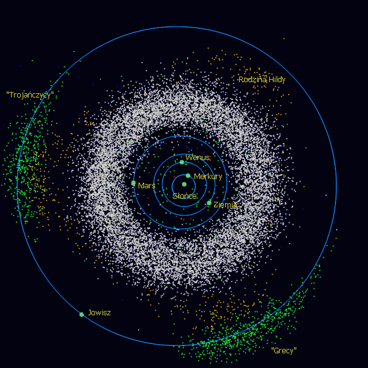

Wszystkie obiekty Układu Słonecznego są w nieustannym ruchu. Planety, planetoidy i komety poruszają się wokół Słońca, natomiast księżyce krążą wokół planet, a drogi jakie przebywają, nazywane są orbitami. Dodatkowo wszystkie te obiekty obracją się wokół własnej osi. Nawet Słońce kręci się wokół własnej osi i porusza się w przestrzeni kosmicznej, a wraz z nim cały Układ Słoneczny.
Planetoidy i komety

W obszarze między orbitami Marsa oraz Jowisza znajduje się pas planetoid. Są to odłamki skalne o różnych kształtach i rozmiarach. Pas planetoid nazywany jest również głównym pasem, gdyż w Układzie Słonecznym istnieją też inne zbiory małych ciał: pas Kuipera, dysk rozproszony i obłok Oorta, oraz wiele mniejszych skupisk, takich jak planetoidy bliskie Ziemi, Grecy czy Trojańczycy.
Komety natomiast są małymi ciałami niebieskimi, będącymi mieszankami pyłu i lodu, krążącymi daleko od Słońca. Gdy kometa zbliży się do Słońca, tworzy długi warkocz.
Pochodzą one z Obłoku Oorta, swego rodzaju kosmicznego "śmietnika", znajdującego się dalej niż najdalsze z planet Układu Słonecznego. Jądra komet są z niego wytrącane w wyniku oddziaływań grawitacyjnych z innymi ciałami i zostają umieszczone na swoich orbitach wokół Słońca.
Co ciekawe, w dawnych czasach wierzono, że kometa zwiastuje wojny i nieszczęścia.
Planety i księżyce
Planety znajdujące się najbliżej Słońca, czyli Merkury, Wenus, Ziemia oraz Mars, są niewielkie i skaliste. Natomiast te znajdujące się dalej, czyli Jowisz, Saturn, Uran oraz Neptun, są znacznie większe i mają ciekło-gazową budowę. Największą planetą jest Jowisz, a najmniejszą Merkury. Mniejsze planety, takie jak na przykład Ceres, nazywane są planetami karłowatymi.
Ceres to najmniejsza planeta tego typu, krążąca w pasie głównym planetoid, który mieści się między Marsem a Jowiszem, nie posiada ona żadnych satelitów.
Wokół planet krążą księżyce. Oprócz Wenus i Merkurego wszystkie planety posiadają swoje księżyce. Jowisz i Saturn mają ich ponad 60, z których większość jest bardzo mała i posiada lodową budowę.